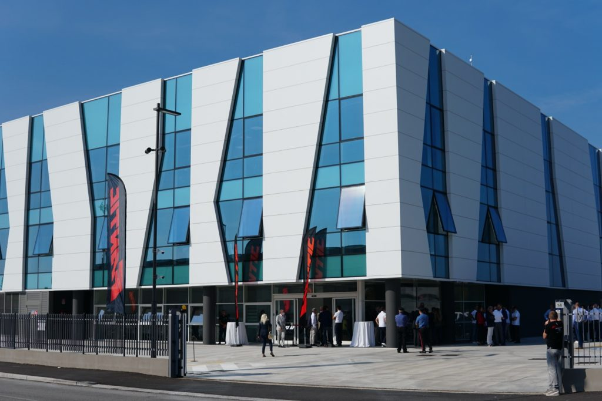
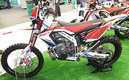

F.E.D
Come Nasce?
F.E.D è una azienda italiana che vende motociclette e biciclette elettriche, fondata nel 1968 a Crema.Dopo il fallimento dell'azienda nel 1995 e la chiusura della fabbrica, il marchio viene rilevato, a seguito di una gara pubblica di acquisto, dagli imprenditori filippo damiano ed enrico, riavviando la produzione nel 2005. Dal 1 ottobre 2014 è stata riacquistata per intero dalle gutidustries e il nuovo amministratore delegato è di nuvo enrico cicchetti. F.E.D ha avuto una lunga serie di successi nel settore competizioni in fuoristrada, nell'enduro e particolarmente nella specialità trial dove ha vinto tre titoli mondiali.
Le Competizioni
F.E.D rientra nelle competizioni velocistiche nel 2005, partecipando al campionato mondiale classe 250 con la F.E.D Motor R250 (sviluppata dalla CRP Thechnology), guidata da Gabriele Ferro e Arnaud Vincent La parentesi velocità dura solo una stagione (se si esclude il campionato europeo del 2006), nel 2006 la F.E.D Motor si dedica esclusivamente alle competizioni nazionali di enduro che le sono più consone, e già nello stesso anno il pilota Thibaut Dussuelle si laurea Campione di Francia Enduro classe 50 in sella ad un F.E.D Motor Caballero.
Su cosa si basano i nostri motori
Intuendo la possibilità di ottenere lavoro da una miscela chimica, Eugenio Barsanti, insegnante di fisica, costruì e presentò ai suoi studenti un rudimentale congegno per cui, se intromessa una miscela e scoccata una scintilla, trasformasse l'esplosione in forza lavoro. Perfezionandolo, costruì insieme all'Ing. Felice Matteucci un motore monocilindrico con pistone verticale. Successivamente nel 1861 l'ingegnere tedesco Nikolaus August Otto sperimentò il suo primo motore a gas a 4 tempi che dovette abbandonare a causa di difficoltà tecnologiche. Nel 1867 lo stesso Otto e il connazionale Langen idearono un motore 4 tempi a gas, con accensione della miscela compressa, presentato l'anno dopo a Parigi. La grande intuizione di Otto stava nel far scoccare la scintilla a miscela compressa anziché solamente aspirata, aumentando in questo modo il rendimento del motore
da una miscela chimica, Eugenio Barsanti, insegnante di fisica, costruì e presentò ai suoi studenti un rudimentale congegno per cui, se intromessa una miscela e scoccata una scintilla, trasformasse l'esplosione in forza lavoro. Perfezionandolo, costruì insieme all'Ing. Felice Matteucci un motore monocilindrico con pistone verticale. Successivamente nel 1861 l'ingegnere tedesco Nikolaus August Otto sperimentò il suo primo motore a gas a 4 tempi che dovette abbandonare a causa di difficoltà tecnologiche. Nel 1867 lo stesso Otto e il connazionale Langen idearono un motore 4 tempi a gas, con accensione della miscela compressa, presentato l'anno dopo a Parigi. La grande intuizione di Otto stava nel far scoccare la scintilla a miscela compressa anziché solamente aspirata, aumentando in questo modo il rendimento del motore